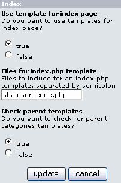

Version: v2.0.0
File: catalog/includes/modules/sts/sts_index.php
Author: Christophe Buchi aka Rigadin2
This is the module used when the “index.php” page is displayed. If it is not installed or is disabled, the default module will be used.

| Parameter | Comment |
| Use templates for index page | Select 'True' to use or 'False' to continue using the STS default module. |
| Files for index.php template | List the files to include when displaying “index.php”,
separated by semicolons. Those files must be located in
“catalog/includes/modules/sts_inc” folder and generally contains code to
build extra placeholders. For example: By default the file sts_user_code is included, but if you don't use any placeholder defined inside this file, just remove it from the list. On the other hand, if you add a contribution which adds some new placeholders, like the famous Header Tags Controller, then you only need to add the file in the list. The files must be separated by semicolons. |
| Check parent templates | If a template is not found for a particular category, the module will look if there is a template for the parent category, or the parent's parent and so on. Option as it can be disabled if not needed, thus saving some parsing time. |
How it works:
When module is enabled, it looks in the template folder to see what templates exist. It is possible to define templates for each manufacturer as well as for each category. Templates must be located in the templates folder (includes/sts_templates/test by default) .It works as so (first found first used):
1. If a manufacturer is selected in the URL, for example index.php?manufacturers_id=4, check for manufacturer templates.
1.1 Use index.php_mfr_4.html if exists.
1.2 Use index.php_mfr.html if exists, otherwise jump to 2.1 .
2. Check for category specific templates, based on the category ID. (Example below with category 33, located in category 22, located in category 11)
2.1 Use index.php_11_22_33.html if exists.
2.2 If parameter "Check parent templates" is enabled, use index.php_11_22.html if exists. If parameter is disabled, jump to 2.4 .
2.3 Use index.php_11.html if exists (index.php_0.html for the home page).
2.4 Use index.php.html if exists.
3. No specific template found, use default template like defined in default module (by default it is sts_template.html)
Note: If you don't create any template corresponding to points 1.1 to 2.3, you don't need to enable this module, the default one will do the same job in less time.